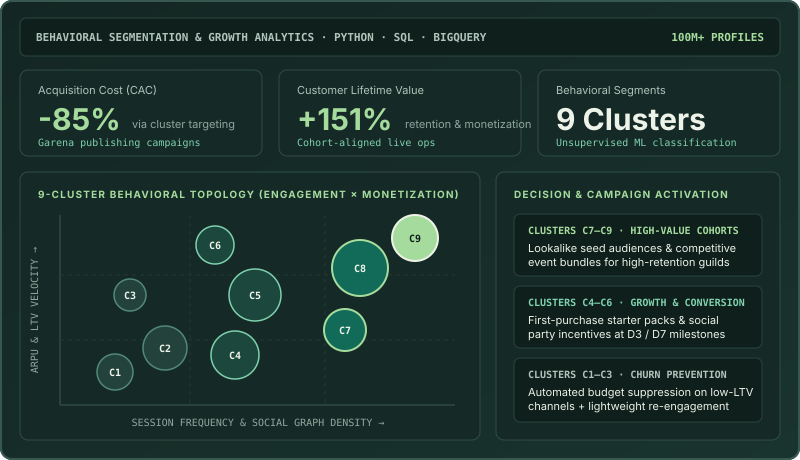
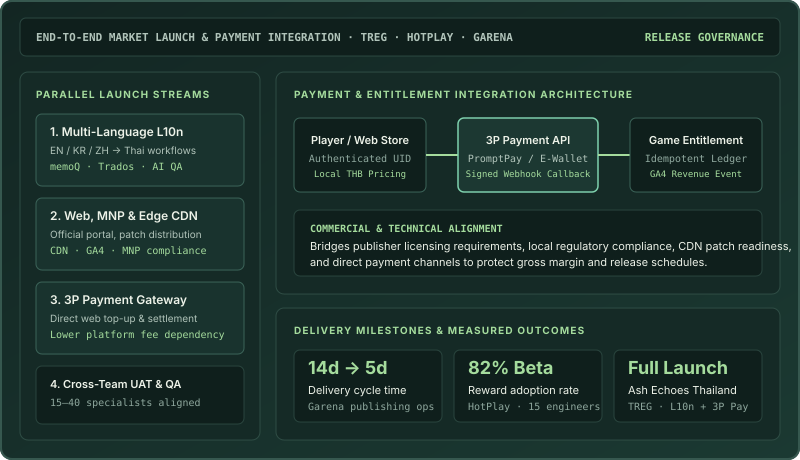

A visual deep-dive into how I connect commercial goals with technical architecture—across evaluable AI workflows, behavioral ML pipelines, market launches, and hardened cloud systems.
85% lower CACML segmentation across 100M+ profiles
14d → 5d cycleRelease & ops automation at Garena
$10M+ annual valueIn-house Linux, NGINX, Redis & DB ops
01 / Visual capability showcase
Systems, visuals & diagrams of work.
Each pillar pairs a visual system preview with deliverables and the underlying workflow architecture.
Showing all 4 capability pillars with visual previews, deliverables, and system workflow diagrams.
01
Applied AI · Agentic Workflows · Evaluation Design
Evaluable AI workflows, RAG pipelines & human-in-the-loop automation.
Designing multi-step AI systems that combine domain retrieval (term bases, policy docs, ticket history) with deterministic verification gates so teams can trust and audit every output.
Agentic orchestration (OpenAI APIs & n8n): Multi-step workflows for support ticket triage, FAQ generation, lead scoring, and AI-assisted localization.
Retrieval-Augmented Generation (RAG): Curated knowledge pipelines indexing style guides, Bilingual/Thai term bases, and operational SOPs to ground model responses.
Lightweight evaluation harnesses: Automated assertions testing factual grounding, schema compliance, localization tone, and explicit fallback routing when confidence drops.
Behavioral adoption design: Aligning workflow convenience, reviewer incentives, and auditability so internal teams actually adopt the tool.
2. Hybrid RAG LookupRetrieve top-k domain glossary and policy chunks with citations.Vector + Keyword RAG
3. Grounded ExecutionGenerate response constrained to cited context and style rules.OpenAI API · Prompt SOP
4. Eval & Escalation GateScore accuracy, tone, and PII safety; route low-confidence items to humans.Eval Harness · Audit Log
02
Data & ML Analytics · User Segmentation · Commercial Growth
Turning 100M+ user telemetry into ML segmentation and revenue decisions.
Building automated ETL pipelines, warehouse models, and unsupervised machine-learning classification that connect raw player and customer events directly to acquisition, retention, and monetization actions.
85% lower CAC9 clusters · 151% LTV improvement

Figure 1.2 — Behavioral topology across 9 clusters (100M+ users), mapping engagement density against monetization velocity to guide campaign spend.
What I build & deliver
Machine-learning user classification: Segmented a 100M+ player base at Garena into 9 actionable behavioral clusters, supporting an 85% reduction in acquisition cost.
Cloud data & ETL pipelines: End-to-end SQL, Python, BigQuery, Hive, and GA4 pipelines powering automated reporting, funnel diagnostics, and payment-operations tracking.
Commercial & P&L forecasting: Directed player analysis and budget allocation at Giant Whale Studio (498% YoY revenue growth) andGarena (+151% LTV).
Executive BI & self-serve dashboards: Looker Studio, Looker, Power BI, and Tableau views translating cohort metrics into weekly publishing decisions.
From signed IP to market launch: localization, infrastructure & payments.
Coordinating engineering, UX/UI, QA, localization, and external partners to launch digital products on schedule—combining technical requirements and UAT governance with direct payment integrations.
15–40 SpecialistsLed across TREG, HotPlay & Garena

Figure 1.3 — Launch and integration architecture connecting multi-language localization, official web/CDN infrastructure, and direct 3P payment settlement.
What I build & deliver
Full-scope market launches: Delivered the Thai release of Ash Echoes and finalized the bondbond community/commerce app at TREG across in-house UX/UI, outsourced devs, and 4 business stakeholders.
Payment gateway & web integrations: Coordinated third-party payment integrations, MNP, CDN, and official websites to reduce platform fee dependence and protect unit economics.
Engineering requirements & UAT governance: Translated commercial goals into PRDs, milestones, and UAT plans for a 15-engineer team at HotPlay (82% open-beta adoption).
High-scale localization ops: Managed EN/KR/ZH-to-Thai pipelines using memoQ, Trados, and AI QA—saving $1M+ per project at Garena while cutting delivery cycles from 14 to 5 days.
Figure 1.4 — Defense-in-depth architecture implemented in this repository: edge probe filtering, stateless Node.js 22 LTS services, and parameterized SQLite persistence.
What I build & deliver
Production Linux & data infrastructure: Managed CentOS, NGINX, Redis, MySQL, monitoring, deployment automation, and disaster recovery at Garena—supporting $10M+ in annual cost avoidance versus outsourcing.
Zero-trust edge ingress: Configured NGINX reverse-proxy rules (`edge/nginx-ingress.conf`) and Cloudflare Worker inspection (`edge/cloudflare-worker.js`) blocking legacy `.php` scans and CGI injection vectors at the perimeter.
Hardened Node.js 22 LTS microservices: Built stateless HMAC-SHA256 token signing, prototype-pollution-safe schema validators, and non-root read-only Docker containers (`services/server.js`).
Parameterized persistence & CI verification: Prepared-statement SQLite layer (`services/data/db.js`) with shadow cutover checks and automated security test suites (`verify.js`).
4. Continuous AuditRun pre-release security, CSP, and unit verification across staging and prod.verify.js · Read-Only Docker
02 / End-to-end delivery blueprint
How I take a problem from ambiguity to production.
Whether acting as a Forward Deployed Engineer, Solutions Engineer, or Technical Product Manager, I bridge commercial targets and engineering execution across four stages.
STAGE 01
Problem Framing & Commercial Model
Clarify the business bottleneck, user incentives, and unit economics before writing code or specs.
P&L & CAC/LTV sensitivity model
Baseline funnel & failure audit
Scoped PRD with explicit non-goals
STAGE 02
Solution & Workflow Architecture
Design the data flow, API contracts, AI retrieval context, and security boundaries.
System & webhook sequence diagrams
RAG glossary / schema definitions
Payment, CDN & infra topology
STAGE 03
Cross-Team Execution & QA Gates
Coordinate engineering, UX, QA, and vendors around measurable readiness milestones.
Sprint milestones (15–40 specialists)
Deterministic AI eval & UAT test plans
Multi-language localization QA
STAGE 04
Telemetry, Evaluation & Live Iteration
Instrument production outcomes and iterate on conversion, latency, and adoption.
GA4 & BigQuery cohort dashboards
Cluster-based campaign targeting
Post-launch runbooks & playbooks
03 / Capability & tooling matrix
Skills mapped to deliverables and proof.
A structured summary for engineering, solutions, and product hiring teams.
Comparison of capability domains, primary deliverables, technical stack, and portfolio evidence